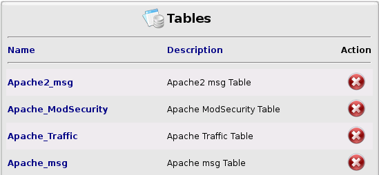
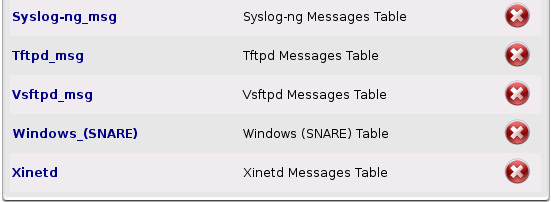
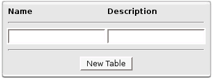
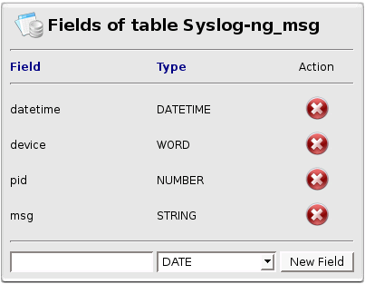

Tables
Tables
Here you can configure your Tables.
Tables are ONLY used during  Report generation to store temporary data and execute SQL requests.
Report generation to store temporary data and execute SQL requests.

...

Tables List

New Table Box
Every time you will  remove a Table, a dialog window will ask you to confirm.
remove a Table, a dialog window will ask you to confirm.
Dialog Window Confirmation
If you click on Table name or create a new one with the 'New Table Box',
you will be redirected to the 'Table Fields List' page.
Here you can add or remove a field.

Table Fields List